บทนี้ต่อยอดจาก Lecture 6.2 (Ethernet switch) — VLAN แบ่ง switched LAN ออกเป็นหลายกลุ่มแบบ logical โดยไม่ต้องเดินสายใหม่
เรียนความหมายและประโยชน์ของ VLAN, ชนิดของ VLAN (default, data, native, management, voice), VLAN ข้ามหลาย switch ด้วย trunk และ IEEE 802.1Q tag, ช่วงหมายเลข VLAN, และ คำสั่ง Cisco IOS สำหรับสร้าง กำหนดพอร์ต ตรวจสอบ ลบ VLAN และตั้งค่า trunk (ใช้ใน Lab 7/8)
หมายเหตุ: หน้า Outline มีหัวข้อ Dynamic Trunking Protocol (DTP) แต่สไลด์ชุดนี้ไม่มีเนื้อหาของ DTP
1. Overview of VLANs
1.1 VLAN คืออะไร ⭐
- VLAN = การเชื่อมต่อแบบ logical กับอุปกรณ์อื่นที่มีลักษณะคล้ายกัน
- การจัดอุปกรณ์เข้า VLAN ต่าง ๆ มีลักษณะดังนี้:
- แบ่งกลุ่มอุปกรณ์ (segmentation) แม้อยู่บน switch เดียวกัน
- จัดองค์กรให้ จัดการง่ายขึ้น
- broadcast, multicast และ unicast ถูกแยกอยู่ภายในแต่ละ VLAN
- แต่ละ VLAN มีช่วง IP address ของตัวเอง
- broadcast domain เล็กลง
ตัวอย่างในภาพ: ตึก 3 ชั้น แต่ละชั้นมี switch — แต่แบ่ง VLAN ตามแผนก ข้ามชั้นได้: VLAN 2 IT (10.0.2.0/24), VLAN 3 HR (10.0.3.0/24), VLAN 4 Sales (10.0.4.0/24)
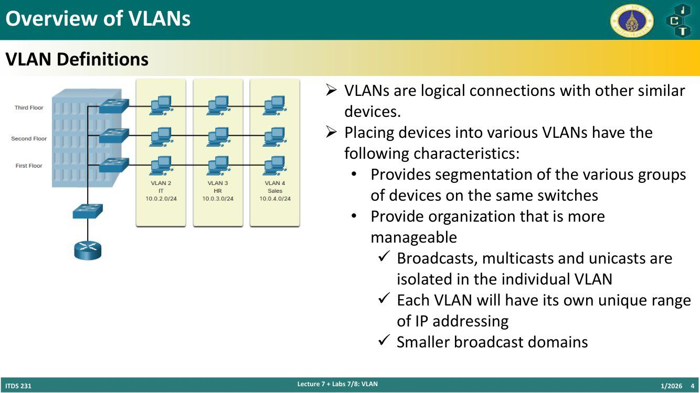
💡 VLAN เหมือนการแบ่ง "ห้องแชทกลุ่ม" ในบริษัท: พนักงานนั่งคนละชั้นก็อยู่กลุ่มเดียวกันได้ และข้อความประกาศ (broadcast) ในกลุ่มหนึ่งไม่รบกวนกลุ่มอื่น
1.2 ประโยชน์ของ VLAN ⭐
| ประโยชน์ | คำอธิบาย |
|---|---|
| Smaller Broadcast Domains | แบ่ง LAN แล้ว ลดขนาด broadcast domain (ตามสไลด์: ลดจำนวนอุปกรณ์ที่ได้รับ broadcast แต่ละครั้ง) |
| Improved Security | เฉพาะผู้ใช้ใน VLAN เดียวกันสื่อสารกันได้ |
| Improved IT Efficiency | จัดกลุ่มอุปกรณ์ที่มีความต้องการคล้ายกัน เช่น อาจารย์ vs นักศึกษา |
| Reduced Cost | switch ตัวเดียวรองรับหลายกลุ่ม/หลาย VLAN |
| Better Performance | broadcast domain เล็ก → traffic น้อยลง → bandwidth ดีขึ้น |
| Simpler Management | กลุ่มคล้ายกันใช้แอปและทรัพยากรเครือข่ายคล้ายกัน |
ตัวอย่าง topology: R1 ต่อ S1, S1 ต่อ S2 และ S3; PC1/PC4 = Faculty VLAN 10 (172.17.10.x), PC2/PC5 = Student VLAN 20 (172.17.20.x), PC3/PC6 = Guest VLAN 30 (172.17.30.x)
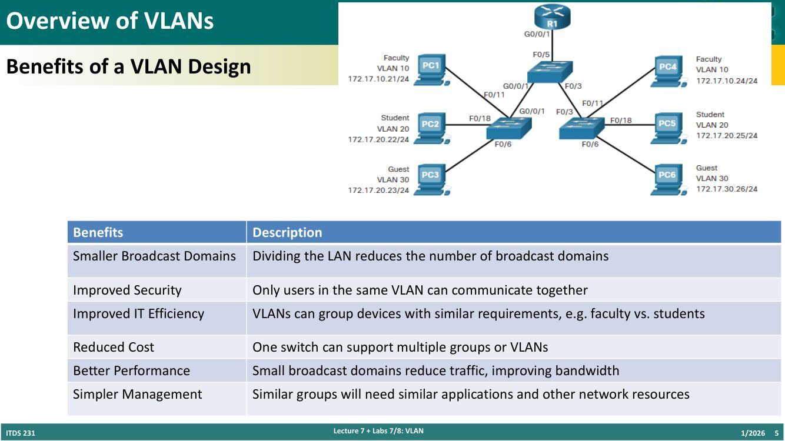
⚠️ อุปกรณ์ต่าง VLAN คุยกันตรง ๆ ไม่ได้ ที่ layer 2 — ต้องผ่านอุปกรณ์ layer 3 (router) เช่น R1 ในภาพ
2. Types of VLANs ⭐
2.1 Default VLAN
VLAN 1 มีสถานะเป็น:
- Default VLAN (ทุกพอร์ตอยู่ VLAN 1 ตั้งแต่แรก)
- Default Native VLAN
- Default Management VLAN
- ลบหรือเปลี่ยนชื่อไม่ได้
Note: แม้ลบ VLAN 1 ไม่ได้ แต่ Cisco แนะนำให้ย้ายหน้าที่ default เหล่านี้ไปไว้ VLAN อื่น (เพื่อความปลอดภัย)
ผลคำสั่ง show vlan brief บน switch ใหม่: VLAN 1 default (active) มีพอร์ต Fa0/1–Fa0/24, Gi0/1, Gi0/2 และมี VLAN 1002 fddi-default, 1003 token-ring-default, 1004 fddinet-default, 1005 trnet-default (act/unsup)
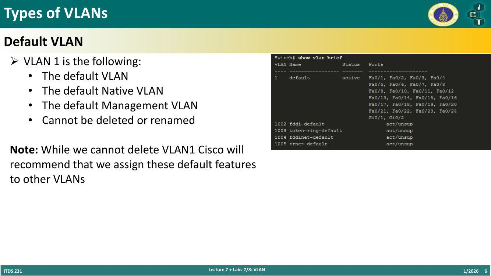
2.2 ชนิดอื่น ๆ
| ชนิด | หน้าที่ |
|---|---|
| Data VLAN | สำหรับ traffic ที่ผู้ใช้สร้าง (email, web); VLAN 1 เป็น default data VLAN เพราะทุก interface อยู่ใน VLAN นี้ |
| Native VLAN | ใช้กับ trunk link เท่านั้น; บน 802.1Q trunk ทุก frame ถูกติด tag ยกเว้น frame ของ native VLAN |
| Management VLAN | สำหรับ SSH/Telnet VTY traffic และ ไม่ควรปนกับ traffic ผู้ใช้; โดยทั่วไปคือ VLAN ที่เป็น SVI (Switched Virtual Interface) ของ layer 2 switch |
| Voice VLAN | สำหรับ traffic เสียง VoIP (ดูข้อ 4) |
3. VLANs ในสภาพแวดล้อมหลาย Switch
3.1 VLAN Trunk ⭐
- Trunk = ลิงก์ point-to-point ระหว่างอุปกรณ์เครือข่าย 2 ตัว
- หน้าที่ของ trunk (Cisco):
- ส่ง traffic ได้มากกว่า 1 VLAN
- ขยาย VLAN ข้ามทั้งเครือข่าย
- ค่าเริ่มต้นรองรับทุก VLAN
- รองรับ 802.1Q trunking
ตัวอย่าง: ลิงก์ S1–S2 (F0/1) และ S1–S3 (F0/3) เป็น trunk ทำให้ Faculty VLAN 10 ที่ S2 และ S3 อยู่ VLAN เดียวกันได้
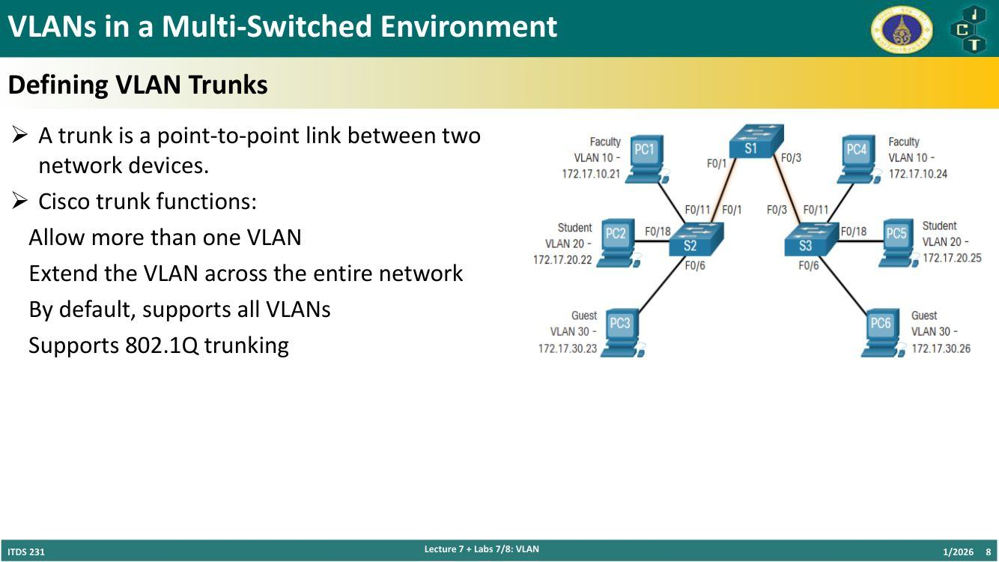
3.2 เครือข่ายที่ไม่มี VLAN
- ถ้าไม่มี VLAN อุปกรณ์ทุกเครื่องที่ต่อ switch จะได้รับ traffic unicast, multicast, broadcast ทั้งหมด
- ตัวอย่าง: ทุกเครื่องอยู่เครือข่ายเดียว 172.17.40.0/24 (subnet mask 255.255.255.0, network address 172.17.40.0) → PC1 ส่ง layer 2 broadcast → switch ส่ง broadcast ออกทุกพอร์ต → ทุกเครื่อง (PC4, PC5, PC6) ได้รับหมด
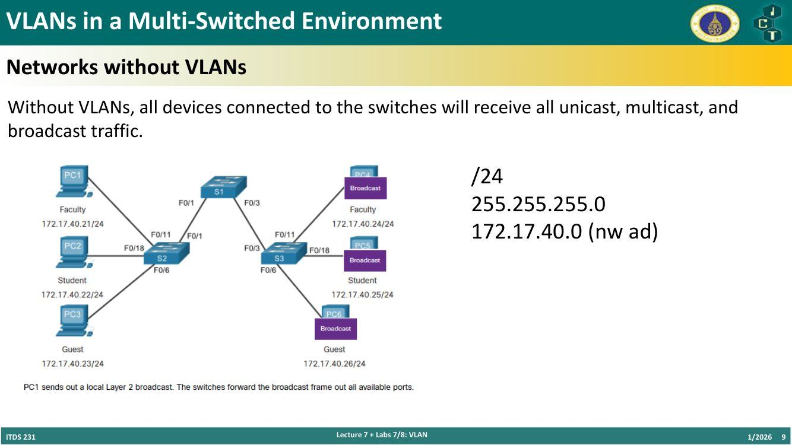
3.3 VLAN Identification with a Tag (IEEE 802.1Q) ⭐⭐
- 802.1Q header (tag) ขนาด 4 bytes แทรกใน Ethernet frame ระหว่าง Source MAC กับ Type/Length
- เมื่อใส่ tag → ต้องคำนวณ FCS ใหม่ (FCS1 ≠ FCS2)
- เมื่อส่งไปยัง end device → ต้องถอด tag ออก และคำนวณ FCS กลับเป็นค่าเดิม
- tag ใช้เฉพาะระหว่าง VLAN switch — ผู้ส่ง/ผู้รับปลายทางเห็น frame ปกติ
Frame ปกติ: Dst MAC | Src MAC | Type/Length | Data | FCS Frame ติด tag: Dst MAC | Src MAC | Tag | Type/Length | Data | FCS
| 802.1Q Tag Field | ขนาด | หน้าที่ |
|---|---|---|
| Type | 2 bytes | ค่า 0x8100 เรียกว่า Tag Protocol ID (TPID) |
| User Priority | 3 bits | ค่าลำดับความสำคัญ (ใช้กับ CoS/QoS) |
| CFI (Canonical Format Identifier) | 1 bit | รองรับ token ring frame บน Ethernet |
| VLAN ID (VID) | 12 bits | หมายเลข VLAN รองรับได้ถึง 4096 VLANs (2¹²) |
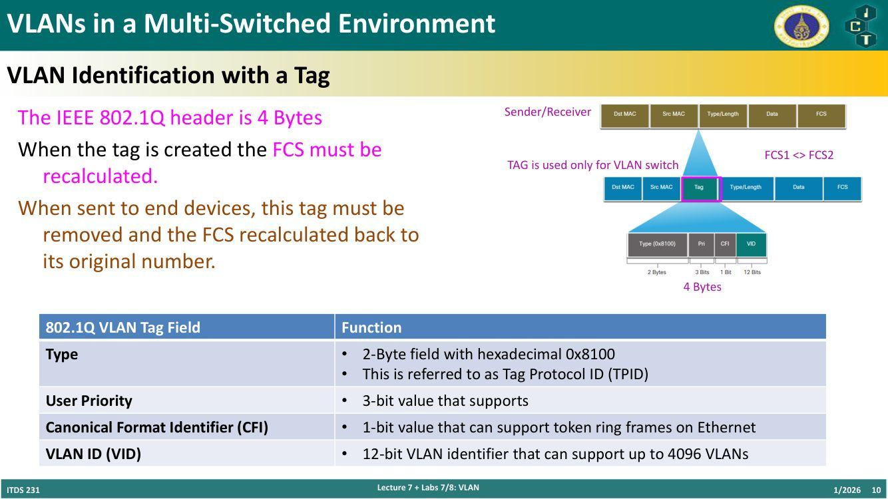
💡 รวม: 16 + 3 + 1 + 12 = 32 bits = 4 bytes
4. Voice VLAN
4.1 Voice VLAN Tagging
- โทรศัพท์ VoIP เป็น switch 3 พอร์ต (P1 ต่อ switch, P2 ต่อ phone ASIC ภายใน, P3 = access port ต่อ PC)
- switch ใช้ CDP (Cisco Discovery Protocol) แจ้งโทรศัพท์ว่า Voice VLAN คืออะไร
- โทรศัพท์ ติด tag traffic เสียงของตัวเอง และตั้ง CoS (Class of Service) ได้ — CoS = QoS ของ layer 2
- โทรศัพท์ อาจหรืออาจไม่ ติด tag ให้ frame จาก PC
ตัวอย่างในภาพ: พอร์ต F0/18 ของ S3 ตั้งค่าให้สั่งโทรศัพท์ติด tag voice ด้วย VLAN 150, จัดลำดับความสำคัญ voice frame และส่ง data frame ไป VLAN 20
| Traffic | Tagging |
|---|---|
| Voice VLAN | ติด tag พร้อมค่า Layer 2 CoS priority ที่เหมาะสม |
| Access VLAN | อาจติด tag พร้อม Layer 2 CoS priority ก็ได้ |
| Access VLAN | หรือ ไม่ติด tag (ไม่มี CoS priority) |
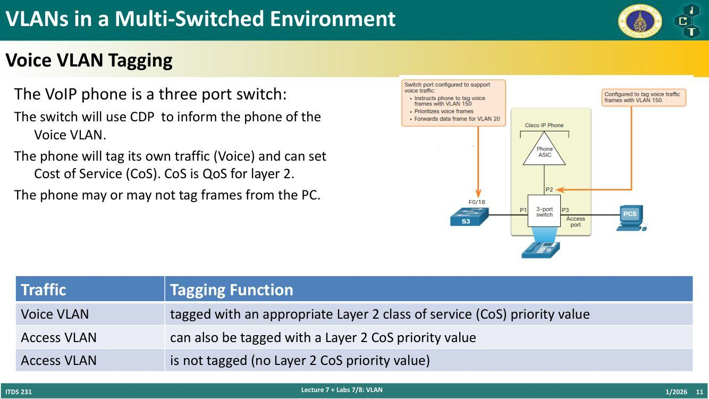
4.2 Voice VLAN Verification
คำสั่ง show interfaces fa0/18 switchport แสดงทั้ง data และ voice VLAN ของ interface:
- Administrative/Operational Mode: static access
- Access Mode VLAN: 20 (student)
- Trunking Native Mode VLAN: 1 (default)
- Voice VLAN: 150 (voice)
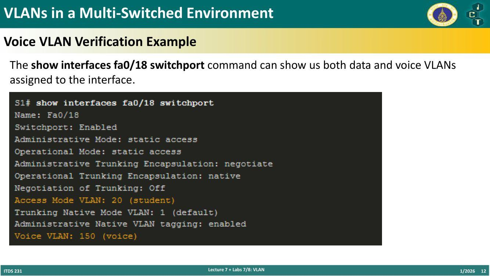
5. VLAN Configuration
5.1 VLAN Ranges บน Catalyst Switches ⭐
Catalyst 2960 และ 3650 รองรับ มากกว่า 4000 VLANs
| Normal Range VLAN 1 – 1005 | Extended Range VLAN 1006 – 4095 |
|---|---|
| ใช้ในธุรกิจ ขนาดเล็กถึงกลาง | ใช้โดย Service Providers |
| 1002 – 1005 สงวนไว้สำหรับ legacy VLANs (FDDI, Token Ring) | อยู่ใน running-config |
| 1, 1002 – 1005 สร้างอัตโนมัติและลบไม่ได้ | รองรับ feature ของ VLAN น้อยกว่า |
| เก็บในไฟล์ vlan.dat ใน flash | ต้องตั้งค่า VTP |
| VTP ซิงก์ข้อมูลระหว่าง switch ได้ |
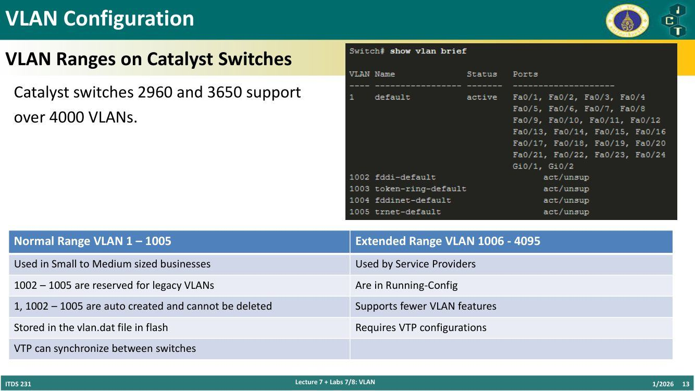
5.2 คำสั่งสร้าง VLAN
- รายละเอียด VLAN เก็บใน vlan.dat
- สร้าง VLAN ใน global configuration mode
| Task | IOS Command |
|---|---|
| เข้า global configuration mode | Switch# configure terminal |
| สร้าง VLAN ด้วยหมายเลขที่ถูกต้อง | Switch(config)# vlan vlan-id |
| ตั้งชื่อ VLAN | Switch(config-vlan)# name vlan-name |
| กลับ privileged EXEC mode | Switch(config-vlan)# end |
5.3 คำสั่งกำหนดพอร์ตเข้า VLAN
| Task | Command |
|---|---|
| เข้า global configuration mode | Switch# configure terminal |
| เข้า interface configuration mode | Switch(config)# interface interface-id |
| ตั้งพอร์ตเป็น access mode | Switch(config-if)# switchport mode access |
| กำหนดพอร์ตให้อยู่ VLAN | Switch(config-if)# switchport access vlan vlan-id |
| กลับ privileged EXEC mode | Switch(config-if)# end |
ตัวอย่าง (สร้าง VLAN 20 ชื่อ student และให้ Fa0/18 อยู่ VLAN นี้):
S1# configure terminal
S1(config)# vlan 20
S1(config-vlan)# name student
S1(config-vlan)# end
S1# configure terminal
S1(config)# interface fa0/18
S1(config-if)# switchport mode access
S1(config-if)# switchport access vlan 20
S1(config-if)# end
5.4 Data และ Voice VLAN บนพอร์ตเดียว
- access port กำหนดได้เพียง 1 data VLAN
- แต่ กำหนด Voice VLAN เพิ่มได้อีก 1 สำหรับกรณีโทรศัพท์และ end device ต่อผ่านพอร์ตเดียวกัน
- ตัวอย่าง: S3 F0/18 → IP phone → PC5 (Student VLAN 20, 172.17.20.25) — switchport ต้องรองรับ voice traffic ไป IP phone และ data traffic ไป PC5
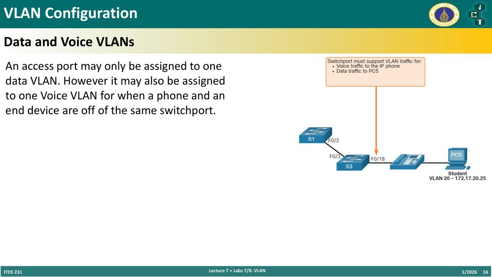
5.5 ตรวจสอบข้อมูล VLAN
คำสั่ง: show vlan [brief | id vlan-id | name vlan-name | summary]
| Task | Option |
|---|---|
| แสดงชื่อ VLAN, สถานะ และพอร์ต บรรทัดละ 1 VLAN | brief |
| แสดงข้อมูลตาม หมายเลข VLAN | id vlan-id |
| แสดงข้อมูลตาม ชื่อ VLAN (ASCII 1–32 ตัวอักษร) | name vlan-name |
| แสดง สรุปข้อมูล VLAN | summary |
show vlan summary→ จำนวน VLAN ที่มี, VTP VLANs, extended VLANsshow interface vlan 20→ สถานะ SVI เช่น "Vlan20 is up, line protocol is up", Hardware is EtherSVI, MTU 1500 bytes
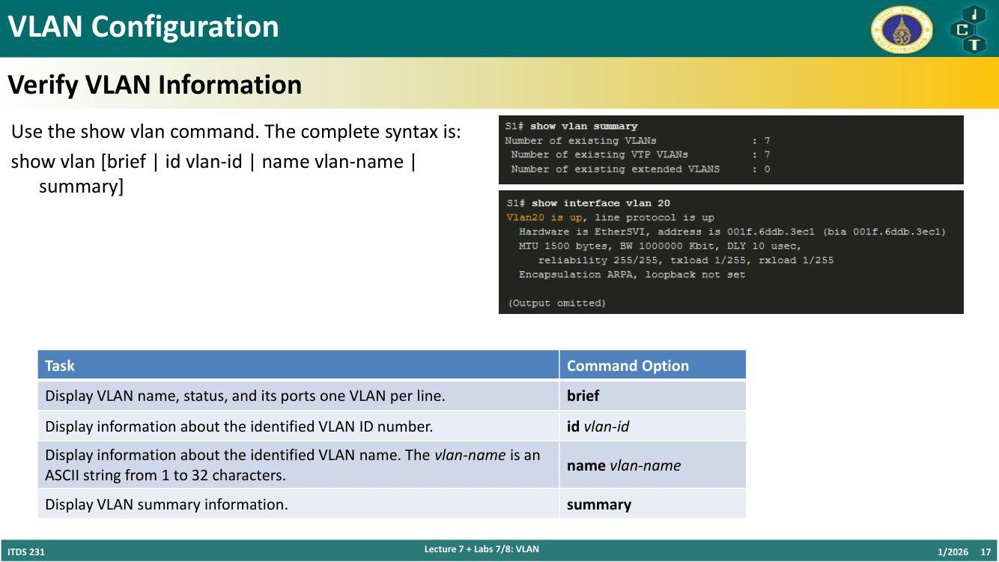
5.6 ลบ VLAN
- ลบทีละ VLAN:
no vlan vlan-id - ⚠️ ก่อนลบ VLAN ให้ย้ายพอร์ตสมาชิกทั้งหมดไป VLAN อื่นก่อน (ไม่งั้นพอร์ตเหล่านั้นใช้งานไม่ได้)
- ลบทุก VLAN:
delete flash:vlan.datหรือdelete vlan.dat - reload switch เมื่อลบทุก VLAN
- คืนค่าโรงงาน: ถอดสาย data ทั้งหมด → ลบ startup-configuration → ลบไฟล์ vlan.dat → reload
6. VLAN Trunks
6.1 คำสั่งตั้งค่า Trunk ⭐
Trunk เป็น layer 2 และส่ง traffic ของทุก VLAN
| Task | IOS Command |
|---|---|
| เข้า global configuration mode | Switch# configure terminal |
| เข้า interface configuration mode | Switch(config)# interface interface-id |
| ตั้งพอร์ตเป็น trunk ถาวร | Switch(config-if)# switchport mode trunk |
| ตั้ง native VLAN ที่ไม่ใช่ VLAN 1 | Switch(config-if)# switchport trunk native vlan vlan-id |
| กำหนดรายการ VLAN ที่ผ่าน trunk ได้ | Switch(config-if)# switchport trunk allowed vlan vlan-list |
| กลับ privileged EXEC mode | Switch(config-if)# end |
6.2 ตัวอย่างตั้งค่า Trunk
Subnet ของแต่ละ VLAN:
| VLAN | ชื่อ | Subnet |
|---|---|---|
| 10 | Faculty/Staff | 172.17.10.0/24 |
| 20 | Students | 172.17.20.0/24 |
| 30 | Guests | 172.17.30.0/24 |
| 99 | Native | 172.17.99.0/24 |
พอร์ต F0/1 ของ S1 ตั้งเป็น trunk:
S1(config)# interface fa0/1
S1(config-if)# switchport mode trunk
S1(config-if)# switchport trunk native vlan 99
S1(config-if)# switchport trunk allowed vlan 10,20,30,99
S1(config-if)# end
Note: ตัวอย่างนี้สมมติเป็น switch 2960 ที่ใช้ 802.1Q tagging — Layer 3 switch ต้องตั้ง encapsulation ก่อน ตั้ง trunk mode
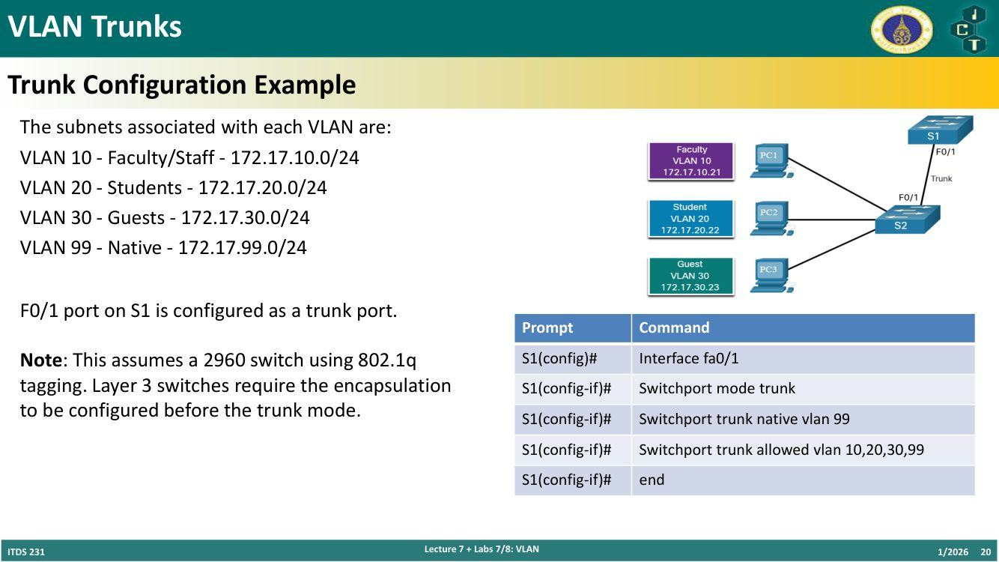
6.3 ตรวจสอบ Trunk
ตั้ง trunk mode และ native VLAN แล้วใช้ show interfaces fa0/1 switchport จะเห็น:
- Administrative Mode: trunk (ตั้งเป็น trunk ในการตั้งค่า)
- Operational Mode: trunk (ทำงานเป็น trunk จริง)
- Encapsulation: dot1q (802.1Q)
- Trunking Native Mode VLAN: 99
- Trunking VLANs Enabled: ALL → ทุก VLAN ที่สร้างบน switch ส่ง traffic ผ่าน trunk นี้ได้
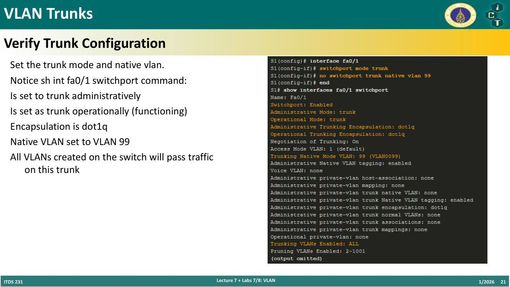
6.4 Reset Trunk กลับค่าเริ่มต้น
(1) คืนค่า trunk เริ่มต้นด้วยคำสั่ง no:
S1(config)# interface fa0/1
S1(config-if)# no switchport trunk allowed vlan
S1(config-if)# no switchport trunk native vlan
S1(config-if)# end
- ทุก VLAN ผ่านได้ (Trunking VLANs Enabled: ALL)
- Native VLAN = VLAN 1
- ตรวจด้วย
sh int fa0/1 switchport
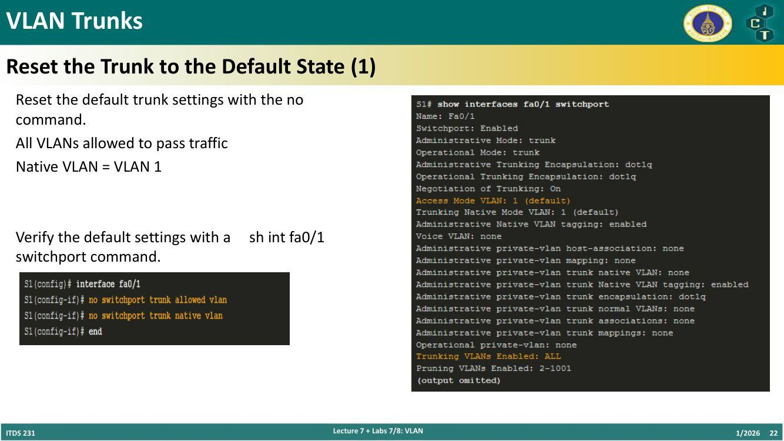
(2) เปลี่ยน trunk กลับเป็น access mode:
S1(config)# interface fa0/1
S1(config-if)# switchport mode access
S1(config-if)# end
- Administrative Mode: static access
- Operational Mode: static access
- Access Mode VLAN: 1 (default)
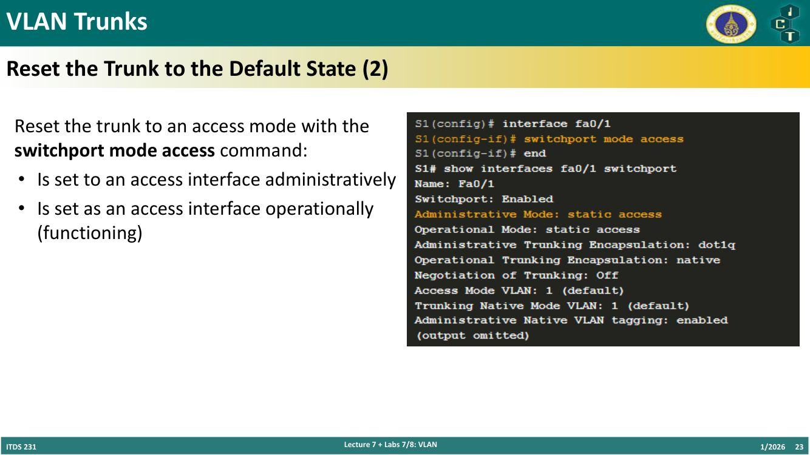
7. สรุปคำสั่ง
| ทำอะไร | คำสั่ง |
|---|---|
| สร้าง VLAN | vlan 10 → name faculty |
| พอร์ตเป็น access | switchport mode access |
| พอร์ตเข้า VLAN | switchport access vlan 10 |
| ตั้ง voice VLAN | switchport voice vlan 150 (คำสั่งนี้ไม่มีในสไลด์ — เสริมจาก Cisco IOS ให้สอดคล้องกับ Voice VLAN 150 ที่เห็นใน show output) |
| ดู VLAN | show vlan brief / id / name / summary |
| ดูพอร์ต | show interfaces fa0/18 switchport |
| ลบ VLAN | no vlan 10 |
| ลบทุก VLAN | delete flash:vlan.dat แล้ว reload |
| ตั้ง trunk | switchport mode trunk |
| native VLAN | switchport trunk native vlan 99 |
| VLAN ที่ผ่าน trunk | switchport trunk allowed vlan 10,20,30,99 |
| reset trunk | no switchport trunk allowed vlan, no switchport trunk native vlan |
| trunk → access | switchport mode access |
8. คำศัพท์สำคัญ
| คำศัพท์ | ความหมาย | จำง่าย ๆ ว่า |
|---|---|---|
| VLAN | LAN เสมือน แบ่งกลุ่มแบบ logical | ห้องแชทกลุ่ม |
| Segmentation | แบ่งกลุ่มอุปกรณ์บน switch เดียวกัน | |
| Broadcast domain | ขอบเขตที่ broadcast ไปถึง | VLAN ทำให้เล็กลง |
| Default VLAN | VLAN 1 — default/native/management, ลบไม่ได้ | |
| Data VLAN | traffic ผู้ใช้ | |
| Native VLAN | บน trunk ไม่ติด tag | |
| Management VLAN | SSH/Telnet VTY, เป็น SVI | |
| SVI | Switched Virtual Interface | IP ของ switch |
| Voice VLAN | traffic VoIP พร้อม CoS | |
| Trunk | ลิงก์ point-to-point ส่งหลาย VLAN | ท่อรวม |
| Access port | พอร์ตของ 1 data VLAN (+ 1 voice VLAN) | |
| IEEE 802.1Q / dot1q | มาตรฐาน tag 4 bytes | |
| TPID | Tag Protocol ID = 0x8100 | |
| User Priority | 3 bits priority | |
| CFI | 1 bit, token ring | |
| VID | 12 bits, 4096 VLANs | |
| FCS recalculation | ใส่/ถอด tag ต้องคำนวณ FCS ใหม่ | |
| CDP | Cisco Discovery Protocol แจ้ง voice VLAN | |
| CoS | Class of Service = QoS layer 2 | |
| Normal / Extended range | 1–1005 / 1006–4095 | |
| vlan.dat | ไฟล์ใน flash เก็บ normal-range VLAN | |
| VTP | ซิงก์ VLAN ระหว่าง switch | |
| Administrative / Operational mode | ที่ตั้งค่า / ที่ทำงานจริง |
9. สรุปท้ายบท / จุดที่มักออกสอบ
- VLAN = logical segmentation — unicast/multicast/broadcast แยกในแต่ละ VLAN, แต่ละ VLAN มี IP range ของตัวเอง, broadcast domain เล็กลง
- ประโยชน์ 6 ข้อ: smaller broadcast domains, security, IT efficiency, reduced cost, performance, simpler management
- ไม่มี VLAN → ทุกเครื่องได้รับ broadcast ทั้งหมด
- VLAN 1 = default VLAN, default native VLAN, default management VLAN, ลบ/เปลี่ยนชื่อไม่ได้ — Cisco แนะนำย้ายหน้าที่ไป VLAN อื่น
- Data VLAN (user traffic), Native VLAN (trunk เท่านั้น, frame ไม่ติด tag), Management VLAN (SSH/Telnet, SVI), Voice VLAN
- Trunk: point-to-point, หลาย VLAN, ขยาย VLAN ทั้งเครือข่าย, default รองรับทุก VLAN, 802.1Q
- 802.1Q tag 4 bytes: TPID 0x8100 (2 bytes), priority 3 bits, CFI 1 bit, VID 12 bits = 4096 VLANs; ใส่ระหว่าง Source MAC กับ Type; ใส่/ถอด tag → คำนวณ FCS ใหม่; tag ใช้เฉพาะระหว่าง switch
- Voice VLAN: VoIP phone = switch 3 พอร์ต, switch บอก voice VLAN ด้วย CDP, CoS = QoS layer 2; access port มีได้ 1 data VLAN + 1 voice VLAN
- VLAN ranges: normal 1–1005 (vlan.dat, 1002–1005 legacy, 1 และ 1002–1005 ลบไม่ได้, SMB), extended 1006–4095 (running-config, service provider, ต้องใช้ VTP)
- คำสั่ง:
vlan id+name;switchport mode access+switchport access vlan id - show vlan brief / id / name / summary
- ลบ:
no vlan id(ย้ายพอร์ตก่อน!), ลบทุกอันdelete flash:vlan.dat+ reload; factory reset = ถอดสาย + erase startup-config + ลบ vlan.dat + reload - Trunk:
switchport mode trunk,switchport trunk native vlan 99,switchport trunk allowed vlan 10,20,30,99; layer 3 switch ต้องตั้ง encapsulation ก่อน - Verify trunk: administrative/operational = trunk, encapsulation dot1q, native VLAN 99, trunking VLANs enabled ALL
- Reset:
no switchport trunk allowed vlan+no switchport trunk native vlan→ ทุก VLAN ผ่าน, native = 1;switchport mode access→ กลับเป็น static access